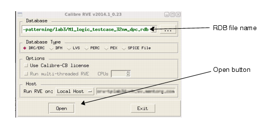
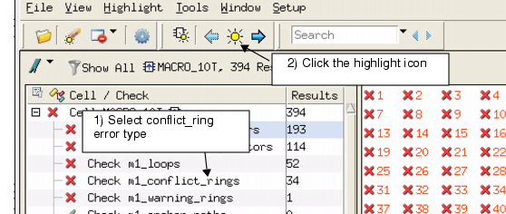
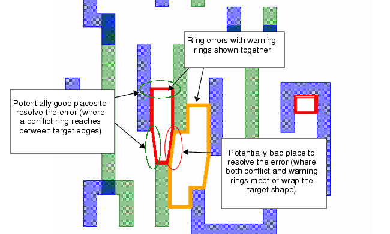

After running
Calibre double-patterning, you find DP-related errors revealed by
the MAP keywords specified in the RET NMDPC command.
In this procedural example, the error type
names are user-defined. Your names may be different. The names are
derived from the SVRF rules file. This procedure only focuses on
a subset of the available DP error resolution tools.
Prerequisites
Successful
completion of an SVRF double-patterning run using RET NMDPC.
Specification
of MAP keywords using RET NMDPC.
Prior
successful DRC completion.
Procedure
- Open the
output layout:
- Open the results database
using the calibredrv menu:
- Select an RDB filename.
- Click the Open button.
Figure 2. Starting RVE 
The RVE form opens with various
error types displayed in the RVE form. The error types are output
by the SVRF and RET NMDPC commands in the Rules file:
The next series of steps explore
the general means of selecting error types and specific error types
used for debugging.
- To select any error type (and
specifically action separators) from the RVE form:
- Select the action separator
error type.
- Click the highlight icon.
Figure 4. Selecting an Action
Separator
In Figure 5, RVE displays the action separators.
Action separators indicate that two shapes the separator touches
must be placed on different masks:
Figure 5. Action Separators
- To select loop errors from
the RVE form:
- Select the loop error type.
- Click the highlight icon.
Figure 6. Selecting a Loop Error
The loop errors are displayed
on the output layout in Figure 7. Loop errors highlight shapes and action
separators that are grouped into odd-cycle errors:
- To select conflict rings from
the RVE form:
- Select the conflict ring error type.
- Click the highlight icon.
Figure 8. Selecting an Error Type
Conflict rings highlight odd-cycle
errors. Conflict rings touch all shapes involved in an odd cycle.
Conflict rings appear in two different ways depending on whether
warning error types are additionally specified in the SVRF rules
file. The differences are shown in Figure 9:
Figure 9. Conflict Ring Errors
- To simultaneously select conflict
rings and warnings from the RVE form:
- Select the conflict ring error type.
- While holding the Shift key,
select the warning ring error type.
Both error types in the RVE
form are selected.
- Click the highlight icon.
Figure 10. Selecting Ring and
Warning Error Types
Both conflict and warning rings
appear as shown in Figure 11. When used together, conflict and warning
rings highlight odd-cycle errors and indicate where odd-cycle errors
can be resolved. Conflict rings touch all shapes involved in an
odd cycle.
Figure 11. Conflict and Warning
Ring Errors 